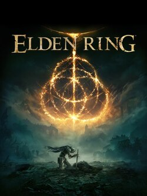

Elden Ring

Elden Ring is a 2022 action role-playing game directed by Hidetaka Miyazaki with worldbuilding provided by the American fantasy writer George R. R. Martin. the game is presented through a third-person perspective with players freely roaming its open world. Linear, hidden dungeons can be explored to find useful items. Players engage enemies using various weapons and magic spells, and can focus on non-direct engagement enabled by stealth mechanics. Throughout the game's world, checkpoints enable fast travel and allow players to improve their attributes using an in-game currency called runes.